- Components
Components
Contents
- Tooltips
- Anchor links
- Buttons
- Dropdowns
- Counts
- Lists
- Tables
- Blocks
- Panels
- Alerts
- Forms
- File holders
- Data formats
Tooltips
Usage
A tooltip should only be added if additional information is required.
Placement
By default, tooltips should be placed below the element that they refer to. However, if there is not enough space in the viewpoint, the tooltip should be moved to the side as needed.
Anchor links
Anchor links are used for navigational actions and lone, secondary commands (such as 'Reset filters' on the Issues List) when deemed appropriate by the UX team.
States
Rest
Primary links are blue in their rest state. Secondary links (such as the time stamp on comments) are a neutral gray color in rest. Details on the main GitLab navigation links can be found on the features page.
Hover
On hover, an underline should be added and the color should change. Both the primary and secondary link should become the darker blue color on hover.
Focus
The focus state should match the hover state.
Buttons
Buttons communicate the command that will occur when the user clicks on them.
Types
Primary
Primary buttons communicate the main call to action. There should only be one call to action in any given experience. Visually, primary buttons are conveyed with a full background fill
Secondary
Secondary buttons are for alternative commands. They should be conveyed by a button with an stroke, and no background fill.
Icon and text treatment
Text should be in sentence case, where only the first word is capitalized. "Create issue" is correct, not "Create Issue". Buttons should only contain an icon or a text, not both.
TODO: Rationalize this. Ensure that we still believe this.
Colors
The default color treatment is the white/grey button. Follow the guidance on the basics page to add meaningful color to a button.
Secondary states
Primary buttons darken the color of their background and border for hover, focus and active states. An inner shadow is added to the active state to denote the button being pressed.
| Values | Info | Success | Warning | Danger |
|---|---|---|---|---|
Background: $color-light Border: $border-color-light |
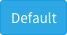 | 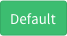 | ||
Background: $color-normal Border: $border-color-normal |
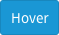 | |||
Background: $color-dark Border: $border-color-dark |
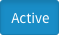 | 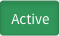 | 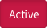 |
Since secondary buttons only have a border on their resting state, their hover and focus states add a background color, which gets darkened on active.
| Values | Success Secondary | Close | Spam |
|---|---|---|---|
Font: $border-color-light Border: $border-color-light |
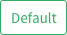 | 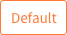 | 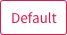 |
Background: $color-light Border: $border-color-light |
|||
Background: $color-normal Border: $border-color-normal |
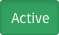 | 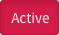 |
Dropdowns
Dropdowns are used to allow users to choose one (or many) options from a list of options. If this list of options is more 20, there should generally be a way to search through and filter the options (see the complex filter dropdowns below.)
TODO: Will update this section when the new filters UI is implemented.
Max size
The max height for dropdowns should target 10-15 items. If the height of the dropdown is too large, the list becomes very hard to parse and it is easy to visually lose track of the item you are looking for. Usability also suffers as more mouse movement is required, and you have a larger area in which you hijack the scroll away from the page level. While it may initially seem counterintuitive to not show as many items as you can, it is actually quicker and easier to process the information when it is cropped at a reasonable height.
Counts
A count element is used in navigation contexts where it is helpful to indicate the count, or number of items, in a list. Always use the number_with_delimiter helper to display counts in the UI.
Lists
Lists are used where ever there is a single column of information to display. Ths issues list is an example of a important list in the GitLab UI.
Types
Simple list using .content-list
List with avatar, title and description using .content-list
List with hover effect .well-list
List inside panel
Tables
When the information is too complex for a list, with multiple columns of information, a table can be used. For example, the pipelines page uses a table.
Blocks
Blocks are a way to group related information.
Types
Content blocks
Content blocks (.content-block) are the basic grouping of content. They are commonly used in lists, and are separated by a botton border.
Row content blocks
A background color can be added to this blocks. For example, items in the issue list have a green background if they were created recently. Below is an example of a gray content block with side padding using .row-content-block.
Cover blocks
Cover blocks are generally used to create a heading element for a page, such as a new project, or a user profile page. Below is a cover block (.cover-block) for the profile page with an avatar, name and description.
Panels
TODO: Catalog how we are currently using panels and rationalize how they relate to alerts
Alerts
TODO: Catalog how we are currently using alerts
Forms
There are two options shown below regarding the positioning of labels in forms. Both are options to consider based on context and available size. However, it is important to have a consistent treatment of labels in the same form.
Types
Labels stack vertically
Form (form) with label rendered above input.
Labels side-by-side
Horizontal form (form.horizontal-form) with label rendered inline with input.
File holders
A file holder (.file-holder) is used to show the contents of a file inline on a page of GitLab.
Data formats
Dates
Exact
Format for exacts dates should be ‘Mon DD, YYYY’, such as the examples below.
Relative
This format relates how long since an action has occurred. The exact date can be shown as a tooltip on hover.
References
Referencing GitLab items depends on a symbol for each type of item. Typing that symbol will invoke a dropdown that allows you to search for and autocomplete the item you were looking for. References are shown as links in context, and hovering on them shows the full title or name of the item.
% Milestones
# Issues
! Merge Requests
~ Labels
@ People
TODO: Open issue: Some commit references use monospace fonts, but others don't. Need to standardize this.